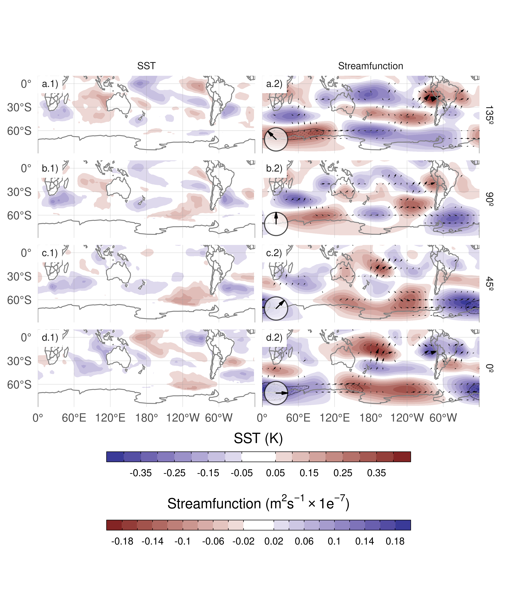
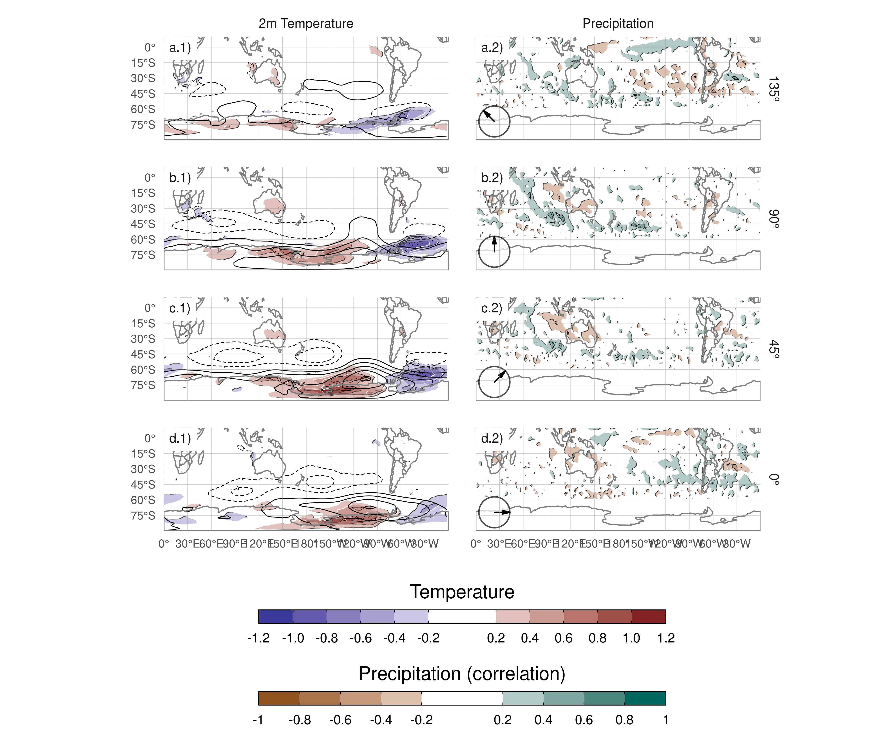

6 Extra figures

Figure 15: Same as Figure 11 but for cEOF1.

Figure 16: Same as Figure 14 but for cEOF1.
Adams, John C., Paul N. Swartztrauber, and Roland Sweet. 1999. “FISHPACK, a Package of Fortran Subprograms for the Solution of Separable Elliptic Partial Differential Equations.” https://www2.cisl.ucar.edu/resources/legacy/fishpack.
Albers, Sam, and Elio Campitelli. 2020. “Rsoi: Import Various Northern and Southern Hemisphere Climate Indices.”
Allaire, J. J., Yihui Xie [aut, cre, Jonathan McPherson, Javier Luraschi, Kevin Ushey, Aron Atkins, et al. 2020. “Rmarkdown: Dynamic Documents for R.”
Baldwin, Mark P., and David W. J. Thompson. 2009. “A Critical Comparison of Stratospheretroposphere Coupling Indices.” Quarterly Journal of the Royal Meteorological Society 135 (644): 1661–72. https://doi.org/10.1002/qj.479.
Bamston, Anthony G., Muthuvel Chelliah, and Stanley B. Goldenberg. 1997. “Documentation of a Highly ENSO-Related Sst Region in the Equatorial Pacific: Research Note.” Atmosphere-Ocean 35 (3): 367–83. https://doi.org/10.1080/07055900.1997.9649597.
Bell, B., H. Hersbach, P. Berrisford, P. Dahlgren, A. Horányi, J. Muñoz Sabater, J. Nicolas, et al. 2020. “ERA5 Monthly Averaged Data on Pressure Levels from 1950 to 1978 (Preliminary Version).” Copernicus Climate Change Service (C3S) Climate Data Store (CDS) (Accessed on \(<\)26-08-2021\(>\)), https://cds.climate.copernicus.eu/cdsapp#!/dataset/reanalysis-era5-pressure-levels-monthly-means-preliminary-back-extension?tab=overview.
Benjamini, Yoav, and Yosef Hochberg. 1995. “Controlling the False Discovery Rate: A Practical and Powerful Approach to Multiple Testing.” Journal of the Royal Statistical Society: Series B (Methodological) 57 (1): 289–300. https://doi.org/10.1111/j.2517-6161.1995.tb02031.x.
Cai, Wenju, Michael J. McPhaden, Alice M. Grimm, Regina R. Rodrigues, Andréa S. Taschetto, René D. Garreaud, Boris Dewitte, et al. 2020. “Climate Impacts of the El Niño on South America.” Nature Reviews Earth & Environment 1 (4): 215–31. https://doi.org/10.1038/s43017-020-0040-3.
Cai, Wenju, Peter van Rensch, Tim Cowan, and Harry H. Hendon. 2011a. “Teleconnection Pathways of ENSO and the IOD and the Mechanisms for Impacts on Australian Rainfall.” Journal of Climate 24 (15): 3910–23. https://doi.org/10.1175/2011JCLI4129.1.
———. 2011b. “Teleconnection Pathways of ENSO and the IOD and the Mechanisms for Impacts on Australian Rainfall.” Journal of Climate 24 (15): 3910–23. https://doi.org/10.1175/2011JCLI4129.1.
Cai, Wenju, Arnold Sullivan, and Tim Cowan. 2011. “Interactions of ENSO, the IOD, and the SAM in CMIP3 Models.” Journal of Climate 24 (6): 1688–1704. https://doi.org/10.1175/2010JCLI3744.1.
Cai, Wenju, and Ian G. Watterson. 2002. “Modes of Interannual Variability of the Southern Hemisphere Circulation Simulated by the CSIRO Climate Model.” Journal of Climate 15 (10): 1159–74. https://doi.org/10.1175/1520-0442(2002)015<1159:MOIVOT>2.0.CO;2.
Campitelli, Elio. 2020. “metR: Tools for Easier Analysis of Meteorological Fields.”
Campitelli, Elio, Leandro B. Díaz, and Carolina Vera. 2022a. “Assessment of Zonally Symmetric and Asymmetric Components of the Southern Annular Mode Using a Novel Approach.” Climate Dynamics 58 (1): 161–78. https://doi.org/10.1007/s00382-021-05896-5.
Campitelli, Elio, Leandro Díaz, and Carolina Vera. 2022b. “Data for "Revisiting the Austral Spring Extratropical Southern Hemisphere Zonally Asymmetric Circulation Using Complex Empirical Orthogonal Functions".” Zenodo. https://doi.org/10.5281/zenodo.6612324.
Carvalho, Leila M. V., Charles Jones, and Tércio Ambrizzi. 2005. “Opposite Phases of the Antarctic Oscillation and Relationships with Intraseasonal to Interannual Activity in the Tropics During the Austral Summer.” Journal of Climate 18 (5): 702–18. https://doi.org/10.1175/JCLI-3284.1.
Cazes-Boezio, Gabriel, Andrew W. Robertson, and Carlos R. Mechoso. 2003. “Seasonal Dependence of ENSO Teleconnections over South America and Relationships with Precipitation in Uruguay.” Journal of Climate 16 (8): 1159–76. https://doi.org/10.1175/1520-0442(2003)16<1159:SDOETO>2.0.CO;2.
Ciasto, Laura M., Graham R. Simpkins, and Matthew H. England. 2015. “Teleconnections Between Tropical Pacific SST Anomalies and Extratropical Southern Hemisphere Climate.” Journal of Climate 28 (1): 56–65. https://doi.org/10.1175/JCLI-D-14-00438.1.
Dowle, Matt, and Arun Srinivasan. 2020. “Data.table: Extension of ’Data.frame’.”
Fogt, Ryan L., and Gareth J. Marshall. 2020. “The Southern Annular Mode: Variability, Trends, and Climate Impacts Across the Southern Hemisphere.” WIREs Climate Change 11 (4): e652. https://doi.org/10.1002/wcc.652.
Gelbrecht, Maximilian, Niklas Boers, and Jürgen Kurths. 2018. “Phase Coherence Between Precipitation in South America and Rossby Waves.” Science Advances 4 (12): eaau3191. https://doi.org/10.1126/sciadv.aau3191.
Gong, Daoyi, and Shaowu Wang. 1999. “Definition of Antarctic Oscillation Index.” Geophysical Research Letters 26 (4): 459–62. https://doi.org/10.1029/1999GL900003.
Goyal, Rishav, Martin Jucker, Alex Sen Gupta, and Matthew H. England. 2022. “A New Zonal Wave 3 Index for the Southern Hemisphere.” Journal of Climate -1 (aop): 1–25.
Grytsai, A. 2011. “Planetary Wave Peculiarities in Antarctic Ozone Distribution During 1979.” International Journal of Remote Sensing 32 (11): 3139–51. https://doi.org/10.1080/01431161.2010.541518.
Hartmann, Dennis L., and Rolando R. Garcia. 1979. “A Mechanistic Model of Ozone Transport by Planetary Waves in the Stratosphere.” Journal of the Atmospheric Sciences 36 (2): 350–64. https://doi.org/10.1175/1520-0469(1979)036<0350:AMMOOT>2.0.CO;2.
Hersbach, H., B. Bell, P. Berrisford, G. Biavati, A. Horányi, J. Muñoz Sabater, J. Nicolas, et al. 2019. “ERA5 Monthly Averaged Data on Pressure Levels from 1979 to Present.” Copernicus Climate Change Service (C3S) Climate Data Store (CDS) (Accessed on \(<\)13-03-2023\(>\)). https://doi.org/10.24381/cds.6860a573.
Hobbs, William R., and Marilyn N. Raphael. 2010. “Characterizing the Zonally Asymmetric Component of the SH Circulation.” Climate Dynamics 35 (5): 859–73. https://doi.org/10.1007/s00382-009-0663-z.
Horel, J. D. 1984. “Complex Principal Component Analysis: Theory and Examples.” Journal of Applied Meteorology and Climatology 23 (12): 1660–73. https://doi.org/10.1175/1520-0450(1984)023<1660:CPCATA>2.0.CO;2.
Hoskins, B. J., and K. I. Hodges. 2005. “A New Perspective on Southern Hemisphere Storm Tracks.” Journal of Climate 18 (20): 4108–29. https://doi.org/10.1175/JCLI3570.1.
Huang, Boyin, Peter W. Thorne, Viva F. Banzon, Tim Boyer, Gennady Chepurin, Jay H. Lawrimore, Matthew J. Menne, Thomas M. Smith, Russell S. Vose, and Huai-Min Zhang. 2017. “Extended Reconstructed Sea Surface Temperature, Version 5 (ERSSTv5): Upgrades, Validations, and Intercomparisons.” Journal of Climate 30 (20): 8179–8205. https://doi.org/10.1175/JCLI-D-16-0836.1.
Hufkens, Koen. 2020. “Ecmwfr: Programmatic Interface to the Two European Centre for Medium-Range Weather Forecasts API Services.”
Irving, Damien, and Ian Simmonds. 2015. “A Novel Approach to Diagnosing Southern Hemisphere Planetary Wave Activity and Its Influence on Regional Climate Variability.” Journal of Climate 28 (23): 9041–57. https://doi.org/10.1175/JCLI-D-15-0287.1.
———. 2016. “A New Method for Identifying the Pacific and Its Influence on Regional Climate Variability.” Journal of Climate 29 (17): 6109–25. https://doi.org/10.1175/JCLI-D-15-0843.1.
Kao, Hsun-Ying, and Jin-Yi Yu. 2009. “Contrasting Eastern-Pacific and Central-Pacific Types of ENSO.” Journal of Climate 22 (3): 615–32. https://doi.org/10.1175/2008JCLI2309.1.
Katz, Richard W., and Barbara G. Brown. 1991. “The Problem of Multiplicity in Research on Teleconnections.” International Journal of Climatology 11 (5): 505–13. https://doi.org/10.1002/joc.3370110504.
Kim, Hyun-kyung, and Sukyoung Lee. 2004. “The Wave in the Southern Hemisphere.” Journal of the Atmospheric Sciences 61 (9): 1055–67. https://doi.org/10.1175/1520-0469(2004)061<1055:TWMFII>2.0.CO;2.
Krokhin, V. V., and W. M. J. Luxemburg. 2007. “Temperatures and Precipitation Totals over the Russian Far East and Eastern Siberia: Long-Term Variability and Its Links to Teleconnection Indices.” Hydrology and Earth System Sciences 11 (6): 1831–41. https://doi.org/10.5194/hess-11-1831-2007.
L’Heureux, Michelle L., and David W. J. Thompson. 2006. “Observed Relationships Between the El Niño and the Extratropical Zonal-Mean Circulation.” Journal of Climate 19 (2): 276–87. https://doi.org/10.1175/JCLI3617.1.
Lim, E.-P., H. H. Hendon, and D. W. J. Thompson. 2018. “Seasonal Evolution of Stratosphere-Troposphere Coupling in the Southern Hemisphere and Implications for the Predictability of Surface Climate.” Journal of Geophysical Research: Atmospheres 123 (21): 12, 002–12, 016. https://doi.org/10.1029/2018JD029321.
Mo, Kingtse C. 2000. “Relationships Between Low-Frequency Variability in the Southern Hemisphere and Sea Surface Temperature Anomalies.” Journal of Climate 13 (20): 3599–3610. https://doi.org/10.1175/1520-0442(2000)013<3599:RBLFVI>2.0.CO;2.
Mo, Kingtse C., and Julia N. Paegle. 2001. “The Pacific Modes and Their Downstream Effects.” International Journal of Climatology 21 (10): 1211–29. https://doi.org/10.1002/joc.685.
Nuncio, M., and Xiaojun Yuan. 2015. “The Influence of the Indian Ocean Dipole on Antarctic Sea Ice.” Journal of Climate 28 (7): 2682–90. https://doi.org/10.1175/JCLI-D-14-00390.1.
Pezza, Alexandre Bernardes, Harun A. Rashid, and Ian Simmonds. 2012. “Climate Links and Recent Extremes in Antarctic Sea Ice, High-Latitude Cyclones, Southern Annular Mode and ENSO.” Climate Dynamics 38 (1): 57–73. https://doi.org/10.1007/s00382-011-1044-y.
Plumb, R. Alan. 1985. “On the Three-Dimensional Propagation of Stationary Waves.” Journal of the Atmospheric Sciences 42 (3): 217–29. https://doi.org/10.1175/1520-0469(1985)042<0217:OTTDPO>2.0.CO;2.
R Core Team. 2020. R: A Language and Environment for Statistical Computing. Manual. Vienna, Austria: R Foundation for Statistical Computing.
Raphael, M. N. 2004. “A Zonal Wave 3 Index for the Southern Hemisphere.” Geophysical Research Letters 31 (23). https://doi.org/10.1029/2004GL020365.
———. 2007. “The Influence of Atmospheric Zonal Wave Three on Antarctic Sea Ice Variability.” Journal of Geophysical Research: Atmospheres 112 (D12). https://doi.org/10.1029/2006JD007852.
Raphael, Marilyn. 2003. “Recent, Large-Scale Changes in the Extratropical Southern Hemisphere Atmospheric Circulation.” Journal of Climate 16 (17): 2915–24. https://doi.org/10.1175/1520-0442(2003)016<2915:RLCITE>2.0.CO;2.
Saji, N. H., B. N. Goswami, P. N. Vinayachandran, and T. Yamagata. 1999. “A Dipole Mode in the Tropical Indian Ocean.” Nature 401 (6751): 360–63. https://doi.org/10.1038/43854.
Saji, N. H., and T. Yamagata. 2003. “Possible Impacts of Indian Ocean Dipole Mode Events on Global Climate.” Climate Research 25 (2): 151–69. https://doi.org/10.3354/cr025151.
Smith, Anne K. 1995. “Numerical Simulation of Global Variations of Temperature, Ozone, and Trace Species in the Stratosphere.” Journal of Geophysical Research: Atmospheres 100 (D1): 1253–69. https://doi.org/10.1029/94JD02395.
Trenberth, Kevin E. 1980. “Planetary Waves at 500 Mb in the Southern Hemisphere.” Monthly Weather Review 108 (9): 1378–89. https://doi.org/10.1175/1520-0493(1980)108<1378:PWAMIT>2.0.CO;2.
Trenberth, Kevin F., and K. C. Mo. 1985. “Blocking in the Southern Hemisphere.” Monthly Weather Review 113 (1): 3–21. https://doi.org/10.1175/1520-0493(1985)113<0003:BITSH>2.0.CO;2.
Turner, John, J. Scott Hosking, Thomas J. Bracegirdle, Tony Phillips, and Gareth J. Marshall. 2017. “Variability and Trends in the Southern Hemisphere High Latitude, Quasi-Stationary Planetary Waves.” International Journal of Climatology 37 (5): 2325–36. https://doi.org/10.1002/joc.4848.
van Loon, Harry, and Roy L. Jenne. 1972. “The Zonal Harmonic Standing Waves in the Southern Hemisphere.” Journal of Geophysical Research 77 (6): 992–1003. https://doi.org/10.1029/JC077i006p00992.
Walker, Sir Gilbert Thomas. 1914. Correlation in Seasonal Variations of Weather, III: On the Criterion for the Reality of Relationships Or Periodicities. Meteorological Office.
Wickham, Hadley. 2009. Ggplot2: Elegant Graphics for Data Analysis. Use R! New York: Springer-Verlag. https://doi.org/10.1007/978-0-387-98141-3.
Wilks, D. S. 2016. “‘The Stippling Shows Statistically Significant Grid Points’: How Research Results Are Routinely Overstated and Overinterpreted, and What to Do about It.” Bulletin of the American Meteorological Society 97 (12): 2263–73. https://doi.org/10.1175/BAMS-D-15-00267.1.
Wilks, Daniel. 2011. Statistical Methods in the Atmospheric Sciences. Vol. 100. Elsevier. https://doi.org/10.1016/B978-0-12-385022-5.00022-1.
Wirth, Volkmar. 1993. “Quasi-Stationary Planetary Waves in Total Ozone and Their Correlation with Lower Stratospheric Temperature.” Journal of Geophysical Research: Atmospheres 98 (D5): 8873–82. https://doi.org/10.1029/92JD02820.
Xie, Pingping, and Phillip A. Arkin. 1997. “Global Precipitation: A 17-Year Monthly Analysis Based on Gauge Observations, Satellite Estimates, and Numerical Model Outputs.” Bull. Amer. Meteor. Soc. 78 (Accessed on \(<\)26-08-2021\(>\)) (11): 2539–58. https://doi.org/10.1175/1520-0477(1997)078<2539:GPAYMA>2.0.CO;2.
Xie, Yihui. 2015. Dynamic Documents with R and Knitr. Second. Boca Raton, Florida: Chapman and Hall/CRC.
Yu, J. Y., H. Paek, E. S. Saltzman, and T. Lee. 2015. “The Early 1990s Change in ENSO-PSA-SAM Relationships and Its Impact on Southern Hemisphere Climate.” Journal of Climate 28 (23): 9393–9408. https://doi.org/10.1175/JCLI-D-15-0335.1.